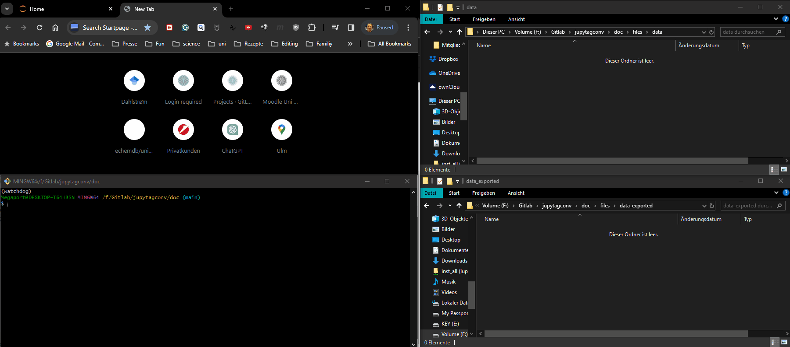

Metadata#
Each measurement file should be annotated with metadata, including data descriptors (units, description of the measured parameter), the experimental conditions (samples, instruments, environment parameters, …), and possibly additional metadata (users, project, …). Usually, only a limited number of descriptors will change in a series of measurements. For example, you could perform a series of measurements at different temperatures. Hence we suggest storing all information in a template, preferably in YAML. The YAML format has the advantage of being easily readable by humans and machines. A detailed description of how to write YAML can be found elsewhere.
A simple example could be as follows:
experimentalist: Max Doe
supervisor: John Mustermann
research question: Resistance of a resistor connected in series to a power supply.
figure description:
fields:
- name: t
unit: s
- name: U
unit: mV
description: Voltage across resistor 1.
Designing a metadata template#
For further processing of your data, it is helpful to acquire as many details on the measurement in a structured way. The following categories are used by the echemdb metadata-schema and serve as examples to create your schema.
curation: Details on the people involved in the data acquisition process.
Note
The name curation refers to the curation process of the measured data. The list can be extended later, when data is modified, reused or curated by other people.
Note
In principle, a list of ORCIDs would be sufficient. From that unique identifier, any other information on the users can be retrieved.
process:
- role: experimentalist # the first role is usually the experimentalist
name: Max Doe
orcid: https://orcid.org/0000-0002-9686-3948
- role: supervisor
name: The Boss
orcid: https://orcid.org/0000-0002-9686-3948
- role: curation
name: The Data Steward
orcid: https://orcid.org/0000-0002-9686-3948
projects: List of projects related to the source data, which can be a large third-party funded project, simply a PhD thesis or a small project within a PhD thesis.
# Descriptor of projects linked to the data.
- name: PhD
ORCID: url to ORCID
identifier: MDO_phd # An internal identifier for this Thesis, such as the user id suffixed with `phd`.
url: https://some.internal.website.org # link to the description of the project, for example in an ELN
- name: PPS # an acronym or unique identifier
title: A title # A more elaborate title
type: internal
url: https://some.internal.website.org # link to the description of the project, for example in an ELN
- name: Serious EU project
title: A title # A more elaborate title
type: external
url: https://some.public.website.org # project homepage
grant number: XXX
identifuer: https://public.website.org/with/json/content.json
figure description: Contains descriptors for the underlying data, which are necessary for exporting the data in a meaningful way. It also contains information on what would be displayed in the figure and which other data is associated with the present figure/data.
Note
To create unitpackages, the structure for the fields must be followed. The name for each field must match a field/column name in the CSV (datafile).
type: raw # raw, digitized, computed
measurement type: temperature variation
simultaneous measurements:
- humidity
- light intensity
fields:
- name: t
unit: s
description: relative time
- name: T
unit: K
description: Room temperature
experimental: Details on the equipment and experimental procedures applied to the system that is described below.
instrumentation:
- type: potentiostat
manufacturer: Electrocemistry Supplier
name: Poti1 # a unique internal name of the device
- type: themometer
model: xyz
manufacturer: Electronic Shop
name: TProbe2
url: https://doi.org/10.1016/0039-6028 # For example: doi referring to a published work describing this setup or configuration
description: Experimental description # A string or a new set of metadata. Can be outsourced to a separate markdown file.
system: Details on the system on which the experiment is performed, including anything that is in contact with or any external parameters that can have an impact on the system/measurement. Consider putting a banana in a beaker to study how its color changes when the external parameters, such as contact with microorganisms during transport, as well as the atmosphere, temperature and light intensity/source are varied in different experiments. Also, include information that does not seem to be relevant at the time of the data acquisition.
Note
This part is presumably the most important one. With increasing amount of information, more correlations can be drawn and possible issues can be found. It also allows elucidating possible variations in future measurements. For example, assume a new student uses a new beaker in a new study on the same system, but does not receive the same results. If the beaker would be the problem, but its properties (glass, thickness, supplier, an internal ID, …) were not recorded properly, one could not so easily pin down the origin of the problem.
container:
type: beaker
identifier: beaker1
components:
- name: beaker
manufacturer: Glass Company
material: glass
LOT: abc123
- name: lid
manufacturer: 3D printed
material: some plastic
description: lid with holes
LOT: def456
purity:
impurities:
- name: Some chemical
concentration: 1 ppm
atmosphere:
components:
- name: air
temperature:
# chose a unit system such as that from astropy or pint for further processing
unit: K
value: 300
humidity:
unit: pct
value: 25
light source:
name: sun
An extensive example of a more complete YAML template for an electrochemical system can be found here.
A complete YAML would contain all of the above (and other custom) categories.
curation:
...
projects:
...
figure description:
...
expeimental:
...
system:
...
Loading templates#
The YAML files can be loaded as a Python dictionary.
import yaml
with open('../data/files/data.csv.meta.yaml', 'rb') as f:
metadata = yaml.load(f, Loader=yaml.SafeLoader)
---------------------------------------------------------------------------
FileNotFoundError Traceback (most recent call last)
Cell In[8], line 2
1 import yaml
----> 2 with open('../data/files/data.csv.meta.yaml', 'rb') as f:
3 metadata = yaml.load(f, Loader=yaml.SafeLoader)
File /usr/share/miniconda3/envs/test/lib/python3.12/site-packages/IPython/core/interactiveshell.py:324, in _modified_open(file, *args, **kwargs)
317 if file in {0, 1, 2}:
318 raise ValueError(
319 f"IPython won't let you open fd={file} by default "
320 "as it is likely to crash IPython. If you know what you are doing, "
321 "you can use builtins' open."
322 )
--> 324 return io_open(file, *args, **kwargs)
FileNotFoundError: [Errno 2] No such file or directory: '../data/files/data.csv.meta.yaml'
Annotating data automatically#
When (measurement) files are created in the file system, preferably the content of the YAML template is directly associated with the file. This can be achieved by monitoring the file system for newly created files. Following, we illustrate the approach by using the Python watchdog package. Besides, we also provide a solution with a graphical user interface.
Watchdog#
The following code observes the folder /data for newly created .csv files.
On file creation, the content from the YAML template is written in the same folder where the file is created.
The name will be identical to the newly created file and a .meta.yaml is appended to the existing filename.
Note
We decided to append both suffixes meta and yaml to the original suffix, to clearly indicate that this file
contains metadata for the recorded CSV and that the content is YAML.
from watchdog.observers import Observer
from watchdog.events import FileSystemEventHandler
from pathlib import Path
import yaml
# adapt accordingly
observed_dir = './data/'
yaml_template = '/files/yaml_templates/demo.yaml'
suffix = '.csv' # mind the dot
def create_metadata(filename):
# load the metadata from a yaml template
with open(yaml_template, 'rb') as f:
metadata = yaml.load(f, Loader=yaml.SafeLoader)
# Add further methods that enhance or modifiy the YAML template
# write an output YAML file
outyaml = Path(filename).with_suffix(suffix + '.meta.yaml')
with open(outyaml, 'w') as f:
yaml.dump(metadata, f)
class NewFileHandler(FileSystemEventHandler):
def on_created(self, event):
if Path(event.src_path).suffix == suffix:
# print the filename
print(event.src_path, ' ' , Path(event.src_path).suffix)
# When a new file is created we catch the filename and parse it to a method
# that generates output yaml files and markdown files for additional notes
create_metadata(event.src_path)
# create an observer
observer = Observer()
# schedule the observer to observe the folder
observer.schedule(NewFileHandler(), path=observed_dir, recursive=False)
# start the observer
observer.start()
To stop watching the folder execute in a separate cell
observer.stop()
GUI#
We are experimenting with different approaches to create applications that annotate data automatically.
autotag-metadata: A standalone application, based on Qt for Python. It includes an editor for modifying YAML templates. This approach is preferable for end-users, for example, in the laboratory.
autoquetado-voila: Based on ipywidgets, which can be served, for example, via voila. It can be included in Jupyter notebooks and due to its modular structure can be adapted more simply to specific needs. (Early development stage)
